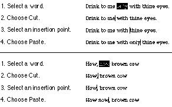

|
Intelligent Cut and
PasteIntelligent cut and paste is a set of editing
features that takes into account the need for spaces
between words. (Note that the features described in this
section don't apply to all languages; for example, the
Thai, Chinese, and Japanese languages don't contain
spaces.) To understand why this feature is helpful,
consider the following sequence of events in a text
application without intelligent cut and
paste:
- A sentence in the user's document reads
Returns are only accepted if the merchandise is
damaged.
The user wants to change this to
Returns are accepted only if the merchandise is
damaged.
- The user selects the word only by
double-clicking. The letters are highlighted, but neither
of the adjacent spaces is highlighted.
- The user chooses Cut from the Edit menu, clicks just
before the word if, and chooses Paste.
- The sentence now reads
Returns are accepted onlyif the merchandise is
damaged.
Note the extra space between are and
accepted and the lack of a space between
only and if. To correct the sentence, the
user has to remove the extra space between are
and accepted and add one between only and
if.
If your application supports intelligent cut and
paste, follow these guidelines:
- If the user selects a word or a range of words, the
selection itself is highlighted, but spaces adjacent to
the selection are not highlighted.
- When the user chooses Cut, if the character preceding
the selection is a space, cut that space along with the
selection. If the character preceding the selection is
not a space, but the character following the selection is
a space, cut that space along with the selection.
- When the user chooses Paste, if the character to the
left or right of the current selection is part of a word
(but not inside a word), insert a space before
pasting.
If the left or right end of a text selection is a
word, follow these rules at that end, regardless of whether
there's a word at the other end. Figure 10-28 shows two examples of
intelligent cut and paste.
Figure 10-28 Intelligent cut and paste

Note that the selected text is not necessarily exactly
the same range that will be cut and, eventually, pasted.
The range may include a space character.
Intelligent cut and paste should be used only if the
application supports the definition of a word, described in
"Selections in
Text" beginning on page 290, rather
than the definition of a word as "anything between two
spaces." These rules apply to any selection consisting of
one or more whole words, no matter how the user made the
selection.
|